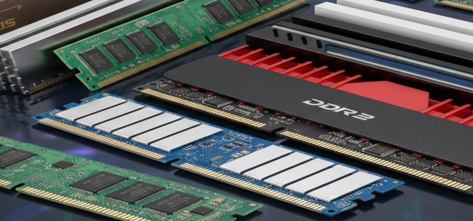
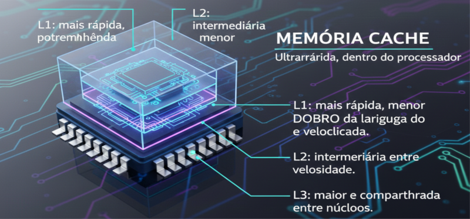
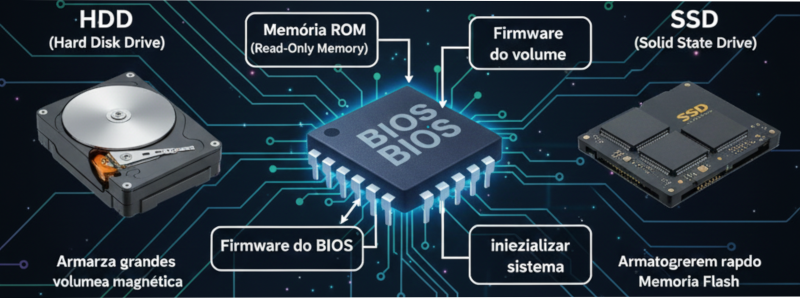
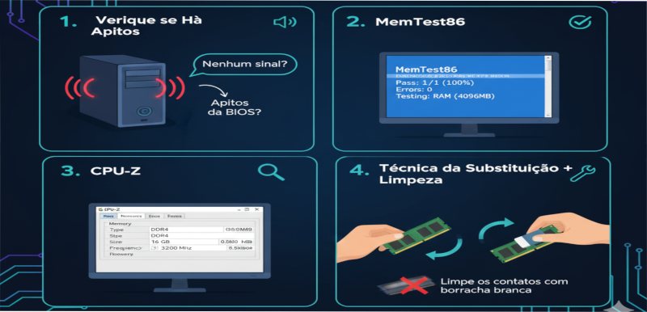
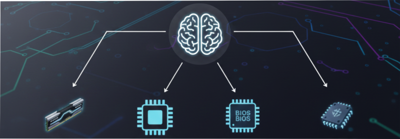

Memória RAM.
A RAM (Memória de Acesso Aleatório) armazena dados temporariamente enquanto o computador está ligado.
Ela permite o acesso rápido às informações que o processador precisa, influenciando diretamente no desempenho do sistema.

Tipos de Memória DDR
As memórias evoluíram com o tempo, aumentando a velocidade e reduzindo o consumo de energia:
- DDR1: até 400 MHz DDR2: até 800 MHz
- DDR3: até 1600 MHz DDR4: até 3200 MHz
- DDR5: acima de 4800 MHz
💡 Cada tipo tem um encaixe diferente para evitar instalação incorreta.
Single e Dual Channel
Single Channel usa um módulo de memória.
Dual Channel utiliza dois módulos idênticos, dobrando a largura de banda e melhorando o desempenho geral do sistema.
Para ativar, instale os módulos nos slots da mesma cor na placa-mãe.

Memória Cache
A memória cache é uma memória ultrarrápida presente dentro do processador.
Ela guarda dados que o CPU acessa com frequência, reduzindo o tempo de espera.
Existem três níveis principais:
- L1: mais rápida, porém menor.
- L2: intermediária entre tamanho e velocidade.
- L3: maior e compartilhada entre núcleos.

Memória ROM
A ROM (Read-Only Memory) é usada para armazenar dados permanentes, como o firmware do BIOS.
Diferente da RAM, seu conteúdo permanece mesmo com o computador desligado.
Ela é essencial para inicializar o sistema.

Instalação da Memória
Para instalar um módulo RAM:
- Desligue o computador e desconecte a energia.
- Abra as travas do slot de memória.
- Alinhe o encaixe e pressione até ouvir o “clique”.
- Evite tocar nos contatos dourados e nos CIs da memória.

Teste e Diagnóstico
Se o computador apita ou não liga, o problema pode estar na memória.
Testes recomendados:
- MemTest86: verifica erros na RAM.
- CPU-Z: mostra frequência e tipo da memória.
- Técnica da substituição: testar outro módulo compatível.
⚙️ Limpe os contatos com borracha branca e reinstale se houver falhas intermitentes.

Conclusão
A memória é fundamental para o desempenho e estabilidade do computador.
Compreender seus tipos e funcionamento ajuda a realizar diagnósticos rápidos e evitar trocas desnecessárias.
Na próxima aula, estudaremos os dispositivos de armazenamento (HD, SSD e M.2).